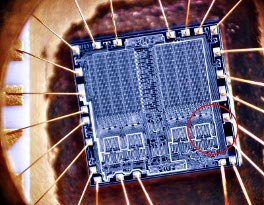

|
Pear, manufacturer of the now popular jDesk portable music player, faces
a problem: the cheap SRAM they purchased is all faulty, right before
the great demo where the company is to present the new model to the
potential customers. As a quick
workaround, they want a special memory allocator to be designed, that allows
the few common memory usage patterns to work on the device, so that at least those
few programs they want to show on the demo would happen to work.
There are three types of RAM problems, each affecting random bits of the memory:
|  |
To isolate the problem, Pear mapped the memory use of those few common memory usage patterns they want to sell their devices with. These maps contain only the following instructions:
| a n | allocate n bytes of memory |
| f IDX | free the memory allocated by the IDXth 'a' instruction |
| w IDX ofs sz str | write string from byte offset ofs of the allocation; number of bytes is sz |
| r IDX ofs sz | read sz long string from byte offset ofs of allocation IDX |
String is given as a space-separated list of decimal numbers between 0 and 255; ofs and sz are always decimal numbers in bytes, >= 0. sz is always smaller than 1024.
Note: IDX is the reference of the allocation, the index of the "a" command in the dump; first instruction of the dump has IDX=0.
Programs written for Pear products are perfect - they never write/read beyond the allocation, and never read uninitizalized parts of the memory, never allocate <= 0 bytes, never allocate more than the amount of host memory at a given time, never do illegal free operations. They also always free all memory used by the end of the program execution.
The memory fault map is given as a sequence of the following structure, each in a new line:
address mask0 mask1 maskF
where address is a decimal address in the memory (byte offset), mask0 is the bitmask of bits stuck 0, mask1 is the bitmask of bits stuck 1, maskF is the bitmask of faulty (unusable bits).
A linear list of allocation addresses in the order of allocation, 0 <= address < size of memory
26 2 7 21 5 8 18 25 1 2 12 a 6 a 10 w 0 2 3 112 177 221 w 1 0 4 112 6 6 6 r 0 2 2 r 1 0 3 f 0 f 1
Notes: first instruction is an allocation.
2 10